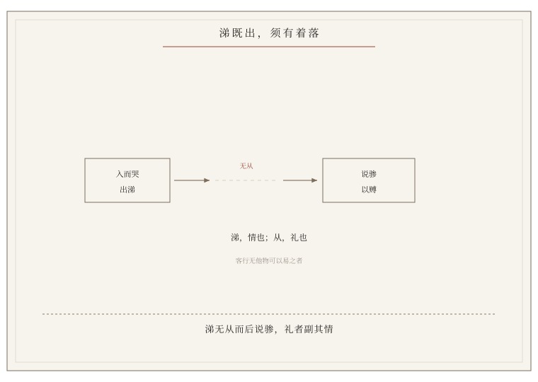

檀弓上 · 三·四十四 · 第 247 课
孔子之卫，遇旧馆人之丧，入而哭之哀。出，使子贡说骖而赙之。子贡曰：「于门人之丧，未有所说骖；说骖于旧馆，无乃已重乎？」夫子曰：「予乡者入而哭之，遇于一哀而出涕。予恶夫涕之无从也，小子行之！」注「赙，助丧用也」「騑马曰骖」。
说什么事：哭出泪来，却须有一物随之；否则那一场哭是空哭。
落在哪一层：礼，兼及礼意。论「涕之无从」。
为何编在此位：上节论服之制，此节论礼之副。服必当物，礼必副情，同一「不虚」之义。
【经】孔子之衛，遇舊館人之喪，入而哭之哀。出，使子貢說驂而賻之。子貢曰：「於門人之喪，未有所說驂；說驂於舊館，無乃已重乎？」夫子曰：「予鄉者入而哭之，遇於一哀而出涕。予惡夫涕之無從也，小子行之！」
【注】前日君所使舍己。赙，助丧用也。騑马曰骖。言说骖大重，比于门人，恩为偏颇。遇，见也。恩重，宜有施惠。客行无他物可以易之者，使遂以往。
【疏】谓助生者丧家使用，故《既夕礼》「知死者赠，知生者赙」，是赙为助生也。熊氏以此赙助丧用，谓助死者，因云赙得生、死两施，熊氏非也。案隐元年《穀梁传》云「钱财曰赙」，此用马者，即财也。云「騑马曰骖」者，《说文》云「騑，旁马」，是在服马之旁。孔子得有骖马者，案《王度记》云「天子驾六马，诸侯四，大夫三，士二」；古《毛诗》云「天子至大夫皆驾四」。孔子既身为大夫，若依《王度记》则有一骖马也，若依《毛诗说》则有二骖马也。「予恶夫涕之无从者」，谓我感旧馆人恩深，涕泪交下，岂得虚然？客行更无他物易换此马，女小子但将骖马以行之，副此涕泪。然《论语》云「颜回之丧，子哭之恸」，恸比出涕，恸则为甚矣；又旧馆之恩不得比颜回之极，而说骖于旧馆、惜车于颜回者：但旧馆情疏，厚恩待我，须有赗赙，故说骖赙之；颜回则师徒之恩亲，乃是常事，则颜回之死必当以物与之，颜路无厌，更请卖车为椁，以其不知止足，故夫子抑之。
旧馆人 注「前日君所使舍己」。昔日君命所使寄宿之家。
说骖 说，通「脱」。骖，注「騑马曰骖」，服马之旁的副马。
赙 注「助丧用也」。《既夕礼》「知死者赠，知生者赙」。
已重 太重。恩为偏颇。
乡者 向者、刚才。
遇于一哀 注「遇，见也」。遇值主人尽一哀。
涕之无从 泪出而无物以随之。从，随也。
孔子往卫，遇见旧日馆舍主人的丧事，进去哭得很哀。出来，叫子贡解下骖马去赙赠。子贡说：「门人之丧，未曾解过骖马；于旧馆就解骖，不太重了吗？」夫子说：「我刚才进去哭他，遇着主人尽一哀而我也出了泪。我厌恶那泪出而没有随它的。小子，你就去做吧！」
此节以「涕之无从」四字为骨。涕者情也，从者礼也。情出于中而无物以随之，则情虽真而无所着落，明日便如未曾有过。故孔子宁解骖马以副一场泪。子贡之疑亦非无见：门人之丧恩亲而礼薄，旧馆之丧恩疏而礼厚，似乎倒置。而孔子所据不在恩之亲疏，在「涕之所出」——那一场哭是他自己哭出来的，不是礼数要他哭的。
第一层 赙与赠 《既夕礼》「知死者赠，知生者赙」。赠者送死者，赙者助生者。疏驳熊氏「赙兼生死」之说，正名而已。名不正，则礼无所施。
第二层 说骖 骖为旁马。孔子为大夫，驾四，有一骖可解。解骖则车不可行，故此举极重——非有余财而与人，是解己之驾以与人。疏「客行无他物可以易之者，使遂以往」，见其决。
第三层 涕之无从 此为全节之魂。涕为情之显，从为礼之副。情已显而礼不副，则情虚；故「恶夫涕之无从」。此语与上节「礼以副忠信」相贯：副者，使内者有着落也。
第四层 旧馆与颜回 疏设一问最妙：哭颜回恸而不说骖，哭旧馆哀而说骖，何也？答曰：旧馆情疏而厚恩待我，须有赗赙；颜回师徒恩亲，是常事。此答把「礼之厚薄」与「恩之亲疏」分开：恩亲者礼不必厚，恩疏而厚待我者礼不得不厚。礼所副者，是那一份「意外之厚」，不是那一份「当然之亲」。
与今日何干 哭了之后要不要「有所表示」。此节说：涕既出，须有着落；否则那一场哭便是空哭。反过来，恩本亲者不必以物——以物副亲，反见其疏。
| 左 | 右 |
|---|---|
| 入而哭之哀 | 情之出 |
| 说骖而赙之 | 礼之副 |
| 涕之无从 | 情出而无物随之 |
| 赙助生，赠送死 | 名各有属 |
| 旧馆情疏而厚待我 | 礼不得不厚 |
| 颜回恩亲是常事 | 礼不必以物 |
| 小子行之 | 断然不疑 |
画一处路旁的馆舍门外，视点平。一辆单车（四马，右旁一马已解下缰绳、由一人牵着）停在中路；车左站着一位老者（衣素、面上有泪痕、一手抬起指向被牵走的那匹马）；车右一位年轻弟子（衣整、一手扶辕、一肩微侧，作迟疑之状）。馆舍门前挂着素帷。不写文字、不画人面细节。赭色只用在被解下那匹马的辔头与老者抬手指尖上。
